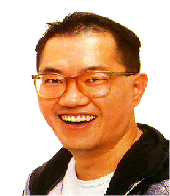

Akira Toriyama
Akira Toriyama (鳥山 明 Toriyama Akira) (Nagoya, Japón, 5 de abril de 1955) es un dibujante de manga y diseñador de personajes japonés. Es conocido principalmente por sus obras Dr. Slump y Dragon Ball y por el diseño de personajes de las sagas Dragon Quest y Chrono Trigger.Akira significa "luz" y Toriyama "montaña de pájaros"; de ahí que el nombre de su estudio sea Bird. Hijo de Kaeasu y Tonbi, y hermano mayor de Uzura, también madre de un niño. Está casado con Yoshimi Toriyama, con la que tiene dos hijos: Sasuke, un chico nacido en abril de 1987, y una hija, cuyo nombre nunca ha mencionado, nacida a finales de 1990. Es un hombre tímido, que prefiere el ambiente tranquilo del campo a la ciudad. Sus hobbies son estar con la familia, montar maquetas, jugar con la videoconsola e ir en moto.
En esta página es el propio autor quién nos explica cómo se hizo dibujante de manga. Esta autobiografía que consta de 6 capítulos (hasta la publicación de Wonder Island en el Weekly Shonen Jump en 1978) ha sido sacada del Teatro del Manga nº 2 y Toriyama nos narra su interés desde pequeño por el dibujo y sus principios en el manga.
Y ASÍ FUE COMO ME HICE DIBUJANTE DE MANGA
Capítulo 1
"Hablo de antes de empezar la escuela secundaria. Yo era muy travieso pero me encantaba dibujar. Siempre dibujaba animales y vehículos porque era lo que más me gustaba. Un día fui a ver la película de dibujos animados 101 dálmatas de Walt Disney y, ante aquella perfección, casi me caigo de espaldas. "¡Cuánto me gustaría dibujar así!" pensé. Después de esto, el jovencito Toriyama se quedó enganchado al dibujo."
Capítulo 2
"Cuando entró en la escuela primaria, el jovencito Toriyama seguía siendo muy travieso. Me pasaba todo el día en la calle haciendo gamberradas hasta que se hacía de noche. Y luego, en casa, pasaba todo el rato dibujando. Un día, fui a casa de una amiguita (en aquel tiempo ya sólo era amable con las chicas) y allí había montones de mangas de su hermano mayor. Me quede perplejo. Nunca había visto tantos juntos. Otro día fui a casa de un vecino que tenía televisión y, cuando vi la tele por primera vez, me quedé aún más perplejo. Al jovencito Toriyama le pasaban cada día cosas más interesantes."
Capítulo 3
"A pesar de que, mientras estaba en la escuela primaria, me volvía loco por los manga, no sé exactamente por qué, cuando entré en la escuela secundaria dejé de leerlos. Yo creo que fue porque empecé a aficionarme al cine y a la televisión. Sin embargo, seguía gustándome dibujar y mis libros de texto y mis libretas estaban llenas de bocetos. Era una época en la que los chavales estábamos llenos de vida y casi nadie iba a clases de repaso después de la escuela. Todos jugábamos apasionadamente en la calle hasta que se ponía el Sol. Y, sin embargo, ahora de adultos todos somos excelentes personas."
Capítulo 4
"Como tenía tanta afición a dibujar, entré en una escuela de diseño. Me seguía gustando dibujar, pero divertirme me gustaba aún más. Cuando terminaba la escuela, me iba a comer fideos chinos, a una tienda de juguetes, a los grandes almacenes, a jugar a los bolos, a jugar al billar, etc. Ni una sola vez me fui directamente a casa. La verdad es que ya casi nunca leía manga y sólo a veces dibujaba alguno. Cuando estaba a punto de graduarme, tuve que enfrentarme a la decisión de qué camino tomar, si ir a la universidad o ponerme a trabajar. Mis padres no estaban de acuerdo, pero yo no lo dudé ni un momento al decidir que quería trabajar. No tenía ganas de estudiar más y pensaba: ¡Mis dibujos son tan buenos que tendrán éxito enseguida!. Yo era muy chulo de joven."
Capítulo 5
"Entré a trabajar en un estudio de diseño y, como tenía mucha maña, lo hacía bien. Pero me cuesta despertar por la mañana y siempre llegaba tarde. Además, como era una empresa más bien grande, eran muy exigentes con la forma de vestir. A mí me gusta vestir de cualquier manera y me regañaban a menudo. En una palabra, yo no encajaba bien en la sociedad. Finalmente me cansé de ir a la empresa y, después de 2 años y medio, lo dejé. Sin embargo, ahora que lo veo a distancia, reconozco que para algo me sirvió ya que me permitió ver el sistema por dentro. Los dibujantes que pasan de ser estudiantes a trabajar por su cuenta no pueden hacerse cargo nunca de ello."